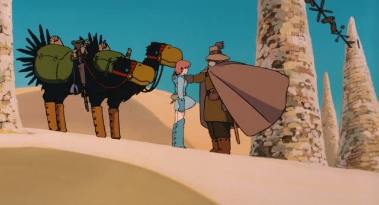
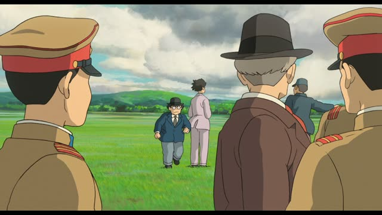
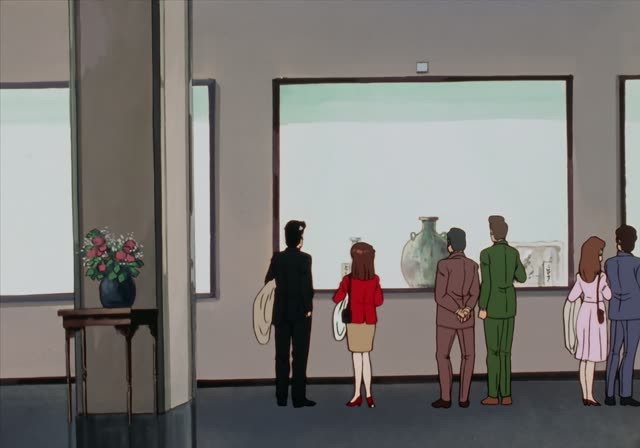
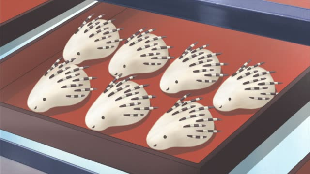

くださる・～てくださる
| Polite | ～てくださいます・～てくださいました |
|---|---|
| Casual | ～てくださる・～てくださった |
Same meaning: "(someone above me) does it for me". The polite version adds ます.

Nausicaä of the Valley of the Wind
いいえ…本当に、よく来てくださいました。
"No... thank you so much for coming."
くださる is the respectful くれる: someone above you gives you something, or ～てくださる, does something for you. 来てくれた → 来てくださった.
On this card, Nausicaä welcomes her old teacher. よく来てくださいました is a set, warm "thank you for coming". ました makes it polite.
It's the same くださ as in ～てください: that's its request form.

The Wind Rises
陸軍の方々が来てくださってる。
"The gentlemen from the army have come."
On this card, Hattori tells Kurokawa about important visitors. The sentence ends plain, but くださる still shows respect to the army men.
Quick Examples
Thanking a teacher.
先生が教えてくださいました。
"My teacher kindly taught me."
PoliteTalking about your boss.
部長がお土産をくださった。
"The manager gave us a souvenir."
くださる alone: give.
CasualA host to guests.
今日は来てくださって、ありがとうございます。
"Thank you for coming today."
PoliteA neighbor helped you move.
隣のおばあさんが手伝ってくださったんだ。
"The old lady next door kindly helped."
CasualWith and without
先生が来てくれた。
"The teacher came (for us)." Friendly.
先生が来てくださった。
"The teacher kindly came." Respectful.
Examples from Media
Oishinbo · Episode 34
お客様も毎日大勢いらしてくださいますわ。
"Lots of customers kindly come every day."
いらして = respectful 来て.

Oishinbo · Episode 14
私たちも招待してくださるそうですよ。
"I hear he'll kindly invite us too."
Vinland Saga · Episode 17
私たちの元へ戻ってきてくださいます。
"He will return to us."
About a legendary king.
Goblin Slayer · Episode 8
私を…助けてくださいますか？
"Will you... save me?"
1 Litre of Tears · Episode 11
先生は、十分やってくださいました。
"Doctor, you did more than enough for her."
Kekkon Dekinai Otoko · Episode 4
先生、今度の土日もいてくださるんでしょ？
"Doctor, you'll be here this weekend too, right?"
1 Litre of Tears · Episode 1
合格したこと、担任の先生が連絡くださった。
"Her homeroom teacher let us know she passed."

Shirokuma Cafe · Episode 34
あ、このヤマアラシまん、５個くださる？
"Oh, could I have five of these porcupine buns?"
くださる？ = a very soft "may I have".